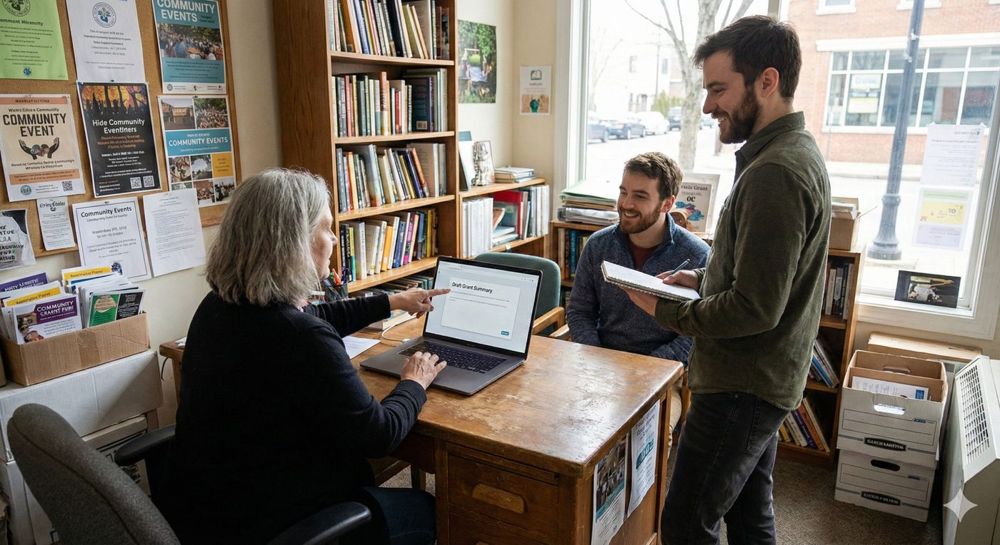

Small nonprofits often assume meaningful AI adoption is for organizations with bigger budgets and IT teams.
I think the opposite is true.

Small teams are actually ideal environments for "tiny tools": narrow, low-risk improvements that buy back real time quickly, without requiring a transformation project.
The ROI math is straightforward. Most AI tools run $20-30/month. If one saves a single staff member 30 minutes per week, it pays for itself fast. The compounding benefit isn't just time, it's fewer context switches, less rework, and more consistency across the team.
The goal isn't "AI transformation." It's recovering capacity for the work only humans can do: relationships, judgment, accountability, community.
What a tiny tool actually looks like:
- Custom assistants (CustomGPTs in ChatGPT, Gems in Gemini, and Claude's Projects feature) let you standardize a workflow once and reuse it consistently across your team. You give the assistant a clear purpose, a few rules, and optionally some reference documents or templates. They take about an hour to set up and dramatically reduce what I call "prompt roulette."
- A step beyond that is vibe coding: describing a simple internal tool in plain language and having AI generate it for you. A basic intake form, a structured reporting template, a decision log. The threshold for this is dropping fast, and small orgs with narrow, specific needs are actually well suited to it.
A few examples that tend to work well as first tools:
- Donor and volunteer acknowledgment drafter: give it a name, amount, program, and tone, and it produces a consistent, warm acknowledgment every time. High frequency, zero sensitivity, easy to verify before it goes out.
- Board packet summarizer: converts long documents into a one-page brief of decisions, risks, and open questions (human review required)
- Grant narrative helper: first drafts from a structured intake form, drawing on your strongest past language
- Meeting notes processor: extracts action items, owners, and deadlines for quick confirmation
- Program impact update drafter: consistent tone and impact framing without starting from scratch every time
How to choose your first one?
Look for a task that is high frequency, high friction, low sensitivity (no client or donor personal data to start), and easy to reverse or verify.
If you could eliminate one repetitive task in your org with a $30/month tool and a 60-minute setup, what would it be?